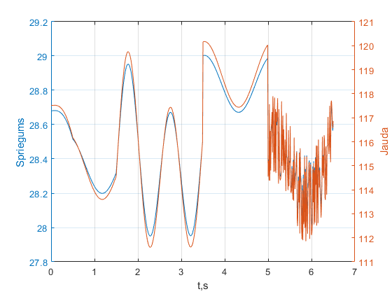
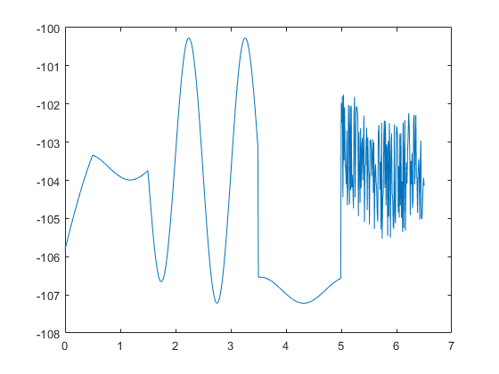
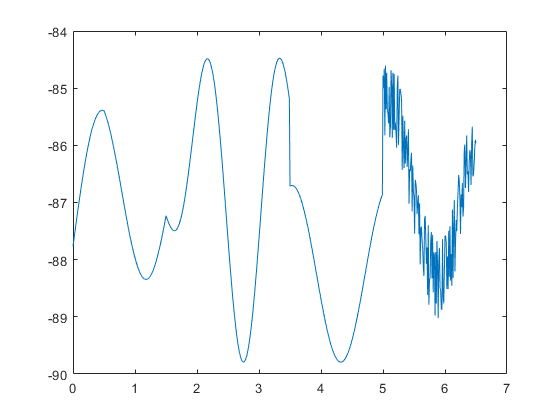

4.laboratorijas darbs
Artuurs Justs
Contents
Dots
R1=1; R2=2; R3=3; R4=4; R5=6; R6=6 ;R7=7; R8=8; t = 0:0.01:6.5; E1 = lab3_fun(t); E2 = sin(4*t); J3 = 6+zeros(size(t));
Jaaprekina:
- Spriegums UR7
- Jauda UR7
- Paarbaudiit un atteelot Kirhofa sprieguma likumu 3 kontuuram
R = [R1+R2+R3+R4+R8 -R8;
-R8 R8+R7+R6+R5];
E = [-E1-J3*(R8+R4+R3);
E2];
Ik = R\E;
IR7 = Ik(2,:)-Ik(1,:);
UR7 = IR7*R7;
PR7 = UR7.*IR7;
figure(1)
yyaxis left
plot(t,UR7)
ylabel('Spriegums')
yyaxis right
plot(t,PR7)
ylabel('Jauda')
xlabel('t,s')
grid
 KSpL 1. konturam
UR1 = Ik(1,:)*R1; UR2 = Ik(1,:)*R2; UR3 = Ik(1,:)*R3; UR4 = Ik(1,:)*R4; UR8 = Ik(1,:)*R8; Uks1 = UR1+UR2+UR3+UR4+UR8-E1; figure(2), plot(t,Uks1)
KSpL 2. konturam
UR6 = Ik(1,:)*R6; UR5 = Ik(1,:)*R5; UR8 = Ik(1,:)*R8; Uks2 = UR6+UR5+UR8+UR7+E2; figure(3), plot(t,Uks2)
Secinaajumi:
Apguutaas zinaasanas matemaatiskai sheemu simuleesanai noderees ETP laboratorijas un maajasdarbu sagatavee.